CỤM ĐỘNG CƠ > LẮP |
| 1. LẮP GIÁ BẮT CHÂN MÁY TRƯỚC TRÁI |
Lắp giá bắt bằng 4 bulông.
| 2. LẮP GIÁ BẮT CHÂN MÁY TRƯỚC PHẢI |
 |
Lắp giá bắt bằng 4 bulông.
| 3. LẮP VAN ĐIỀU KHIỂN DẦU PHỐI KHÍ TRỤC CAM |
Bôi dầu động cơ vào gioăng chữ O mới.
Lắp gioăng chữ O vào van điều khiển dầu.
Lắp van điều khiển dầu bằng bu lông.
| 4. LẮP CẢM BIẾN VỊ TRÍ TRỤC KHUỶU |
| 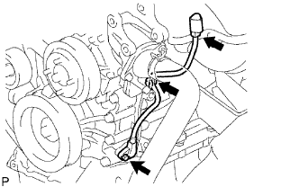 |
Bôi một lớp mỏng dầu động cơ vào gioăng chữ O của cảm biến.
Lắp cảm biến bằng bulông.
Lắp giắc vào giắ bắt giắc.
Gắn kẹp dây điện.
Nối giắc của cảm biến.
| 5. LẮP CẢM BIẾN VỊ TRÍ TRỤC CAM |
Bôi dầu động cơ vào gioăng chữ O mới.
Lắp gioăng chữ O vào cảm biến.
Lắp cảm biến bằng bu lông.
| 6. LẮP CẢM BIẾN NHIỆT ĐỘ NƯỚC LÀM MÁT |
Dùng đầu khẩu 19 mm loại sâu, lắp một gioăng mới và cảm biến.
| 7. LẮP CẢM BIẾN TIẾNG GÕ |
Lắp cảm biến sao cho nó ở vị trí nằm ngang như được chỉ ra trên hình vẽ. Sau đó lắp bu lông.
Nối giắc của cảm biến.
| 8. LẮP ỐNG NƯỚC ĐI TẮT SỐ 1 |
 |
Lắp một gioăng mới và ống nước đi tắt bằng 2 đai ốc.
| 9. LẮP CÔNG TẮC ÁP SUẤT DẦU ĐỘNG CƠ |
 |
Bôi keo lên 2 hoặc 3 ren của công tắc áp suất dầu.
Lắp công tắc áp suất dầu.
Nối giắc của công tắc áp suất dầu.
Khởi động động cơ và kiểm tra rò rỉ dầu động cơ.
| 10. LẮP PULI CĂNG ĐAI SỐ 1 |
 |
Lắp vòng đệm, puli căng đai và tấm bắt puli bằng bu lông.
| 11. LẮP VAN HẰNG NHIỆT |
Lắp một gioăng mới vào van hằng nhiệt.
Lắp van hằng nhiệt vào thân máy với van khí hướng thẳng lên trên.
| 12. LẮP ĐƯỜNG VÀO CỦA NƯỚC |
Lắp đường vào bằng 2 đai ốc và bu lông.
Lắp giắc nối.
| 13. LẮP BỘ CĂNG ĐAI V |
Lắp tạm thời bộ căng đai bằng 3 bulông.
Lắp bộ căng đai bằng cách xiết chặt 3 bulông theo thứ tự như trên hình vẽ.
| 14. LẮP GIÁ BẮT MÁY NÉN ĐIỀU HOÀ |
 |
Lắp tạm thời giá bắt máy nén bằng 3 bulông được đánh dấu A.
Chắc chắn không có khe hở giữa thân máy và giá bắt như được chỉ ra trên hình vẽ. Sau đó lắp bu lông B.
Xiết chặt hoàn toàn các bulông có dấu A và lắp bu lông có dấu C.
| 15. LẮP ĐƯỜNG ỐNG GÓP XẢ |
 |
Lắp một gioăng mới và đường ống xả bằng 6 đai ốc.
| 16. LẮP TẤM CÁCH NHIỆT ĐƯỜNG ỐNG GÓP XẢ |
Lắp cách nhiệt bằng 5 bulông.
| 17. LẮP ĐƯỜNG ỐNG GÓP NẠP |
 |
Lắp một gioăng mới và đường ống nạp bằng 5 bulông và 2 đai ốc.
Lắp cảm biến vị trí trục khuỷu vào kẹp.
| 18. LẮP VÒI PHUN |
Lắp một cách nhiệt vào vòi phun.
Bôi một lớp mỏng mỡ hoặc xăng lên gioăng chữ O mới và lắp nó vào vòi phun.
| 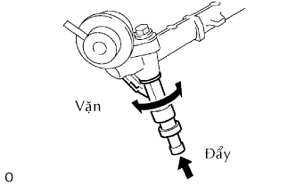 |
Bôi một lớp mỏng mỡ hoặc xăng lên chỗ lắp mà ống phân phối tiếp xúc với gioăng chữ O.
Để lắp vòi phun vào ống phân phối, hãy ấn vòi phun vào trong khi xoay sang phải và sang trái một chút.
Hãy định vị giắc vòi phun sao cho nó quay xuống dưới.
| 19. LẮP ỐNG PHÂN PHỐI NHIÊN LIỆU |
 |
Lắp 4 bạc cách vào nắp quy lát.
Lắp ống phân phối nhiên liệu cùng với 4 vòi phun và 2 đệm cách bằng 2 bu lông.
Lắp 4 giắc vòi phun.
 |
Lắp 4 kẹp và dây điện vào ống phân phối.
Lắp ống chân không.
| 20. LẮP CỔ HỌNG GIÓ |
| 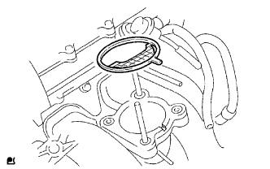 |
Lắp gioăng mới lên đường ống nạp.
 |
Lắp cụm cổ họng gió bằng 2 bulông và 2 đai ốc.
Nối 2 ống nước đi tắt vào cổ họng gió.
Ngắt giắc nối cảm biến vị trí bướm ga và giắc nối môtơ điều khiển.
| 21. LẮP DÂY ĐIỆN ĐỘNG CƠ |
Lắp dây điện (dây điện nối mát động cơ) vào phía sau động cơ bằng 2 bu lông sao cho nó nằm trong phạm vi tiêu chuẩn như được chỉ ra trên hình vẽ.
Lắp giắc nối cảm biến áp suất dầu.
Lắp giắc của bộ lọc ồn.
Lắp giắc nối cảm biến vị trí trục cam.
Lắp 4 giắc vòi phun.
Lắp giắc nối cảm biến vị trí trục khuỷu.
Lắp giắc nối van điều khiển dầu.
Lắp giắc nối của VSV lọc.
Lắp giắc nối cổ họng gió
Lắp giắc cảm biến nhiệt độ nước làm mát.
Lắp giắc nối cảm biến tiếng gõ.
Lắp dây điện vào các kẹp.
| 22. LẮP MÁY PHÁT |
| 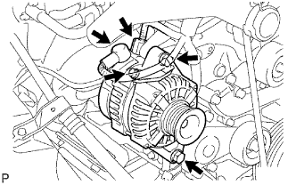 |
Lắp máy máy phát bằng 2 bu lông.
Lắp dây điện máy phát bằng bulông và đai ốc.
Lắp nắp cực.
Lắp giắc nối.
| 23. LẮP ỐNG THÔNG HƠI |
Lắp ống thông hơi (ống thép) bằng bulông.
| 24. LẮP BUGI |
| 25. LẮP CUỘN ĐÁNH LỬA |
Lắp cuộn đánh lửa bằng bu lông.
Lắp 4 giắc của cuộn đánh lửa.
| 26. THÁO ĐỘNG CƠ RA KHỎI GIÁ BẮT ĐỘNG CƠ |
| 27. LẮP CỤM ĐỘNG CƠ |
Treo động cơ bằng palăng treo động cơ vào các móc treo động cơ.
Hạ thấp cụm động cơ vào khoang động cơ một cách chậm rãi.
Lắp các giá bắt chân máy bằng 4 bu lông và 4 đai ốc.
| 28. LẮP TẤM BẮT PHÍA SAU |
Lắp tấm bắt phía sau bằng 2 bulông.
| 29. LẮP BÁNH ĐÀ |
Bôi keo lên 2 hoặc 3 ren của đầu bulông bắt.
Lắp bánh đà.
Cố định trục khuỷu bằng SST.
Lắp và xiết chặt đều tay 10 bulông bắt qua một vài bước, theo thứ tự như trong hình vẽ.
 |
Đánh dấu các bu lông bắt bằng bút sơn.
Xiết chặt các bu lông bắt đi 90 độ theo tự tự đánh số như trên hình vẽ.
Kiểm tra rằng các dấu sơn bây giờ đã quay đi một góc 90° so với vị trí trước đó.
| 30. LẮP ĐĨA LI HỢP |
 |
Lồng SST vào đĩa li hợp. Sau đó cắm SST (cùng với đĩa li hợp) vào bánh đà.
| 31. LẮP NẮP LI HỢP |
 |
Gióng thẳng các dấu ghi nhớ trên nắp li hợp và bánh đà.
Lắp tạm thời 6 bulông.
Hãy xiết chặt 6 bu lông như được chỉ ra dưới đây.
Hãy xác định bu lông cần được xiết bằng cách chọn bu lông gần chốt nhất.
Xiết chặt đều tay 6 bu lông từng cặp đối diện nhau từ vị trí bu lông đầu tiên. Hãy dùng hình vẽ sau để tham khảo.
Dịch chuyển nghẹ nhàng SST lên và xuống, sang trái và sang phải.
Kiểm tra rằng đĩa đã đồng tâm và sau đó xiết chặt các bu lông.
| 32. LẮP CỤM HỘP SỐ THƯỜNG |
 |
Hãy gióng thẳng trục sơ cấp với đĩa li hợp và lắp hộp số vào động cơ.
Lắp 4 bulông.
| 33. LẮP MÁY KHỞI ĐỘNG |
 |
Lắp máy khởi động bằng 2 bu lông.
Lắp dây điện máy khởi động vào cực 30 bằng đai ốc.
Lắp nắp cực.
Lắp giắc nối máy khởi động.
Lắp xi lanh cắt li hợp.
| 34. LẮP TRỤC CÁC ĐĂNG VỚI VÒNG BI ĐỠ GIỮA |
 |
Tháo SST ra khỏi vỏ mở rộng hộp số.
Lắp trục cácđăng vào vỏ mở rộng hộp số.
 |
Lắp giá bắt vòng bi đỡ giữa bằng 2 đệm và 2 bu lông. Hãy xiết chặt các bu lông bằng tay càng nhiều càng tốt.
 |
Gióng thẳng các dấu ghi nhớ trên mặt bích trục các đăng và mặt bích của bộ vi sai.
Lắp trục các đăng bằng 4 bulông, 4 vòng đệm và 4 đai ốc.
Dỡ tải cho xe. Đường tâm vòng bi giữa và đường tâm của vỏ vòng bi đỡ giữa (xem hình vẽ) phải được điều chỉnh nằm trong -1.0 đến 1.0 mm của chúng. Hãy đo sự sai khác dọc theo trục trước/sau của xe.
Xiết chặt 2 bu lông của giá bắt vòng bi đỡ giữa.
| 35. LẮP ĐOẠN ỐNG XẢ TRƯỚC |
 |
Dùng một thước kẹp, đo chiều dài tự do của lò xo nén.
Lắp đoạn ống xả phía trước vào cái đỡ ống.
| 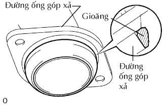 |
Lắp một gioăng mới vào ống bên ngoài.
Lắp đoạn ống xả phía trước bằng 2 lò xo nén và 2 bu lông. Hãy xiết chặt xen kẽ các bu lông qua một vài lần.
| 36. LẮP NẮP CAPÔ |
| 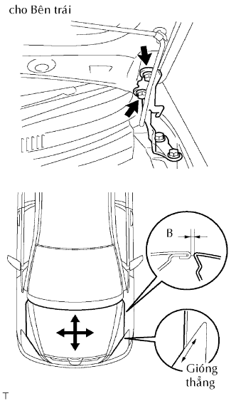 |
Điều chỉnh vị trí của nắp capô.
Nới lỏng các bu lông bản lề của nắp capô.
Dịch chuyển nắp capô và điều chỉnh khe hở giữa nắp capô và tai xe phía trước. Chắc chắn rằng khe hở nằm trong phạm vi tiêu chuẩn.
Hãy xiết chặt các bu lông bản lề nắp capô sau khi điều chỉnh.
 |
Điều chỉnh đệm cao su sao cho độ cao của nắp capô và tai xe là bằng nhau.
Nâng lên hoặc hạ xuống nép trước của nắp capô bằng cách vặn đệm cao su. Chắc chắn rằng khe hở nàm trong phạm vi tiêu chuẩn.
| 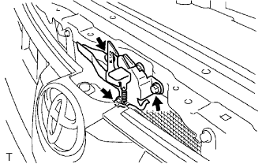 |
Điều chỉnh khoá nắp capô.
Nới lỏng 3 bulông.
| 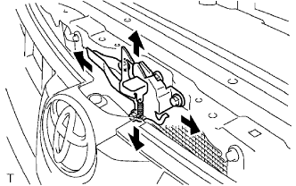 |
Điều chỉnh vị trí khoá nắp capô sao cho móc khoá có thể khớp vào êm dịu.
Xiết chặt 3 bu lông sau khi điều chỉnh.
| 37. LẮP TẤM VÁCH NGĂN |
 |
Lắp tấm vách ngăn bằng 9 bu lông.
| 38. LẮP CỤM MÔTƠ GẠT NƯỚC KÍNH CHẮN GIÓ VÀ THANH NỐI |
Lắp cụm môtơ gạt nước và thanh nối vào xe. (Xem trang Kích chuột vào đây).
| 39. LẮP MÁY NÉN ĐIỀU HOÀ |
Lắp tạm thời bulông A đểø lắp máy nén điều hoà.
Lắp máy nén và xiết chặt hoàn toàn 4 bulông theo thứ tự như trong hình vẽ.
Lắp ống hút bằng 2 bu lông.
Nối giắc của máy nén.
| 40. LẮP DẪN HƯỚNG QUE THĂM DẦU |
Lắp mộ gioăng chữ O mới và dẫn hướng que thăm dầu bằng bu lông.
| 41. LẮP QUE THĂM DẦU |
| 42. LẮP BƠM TRỢ LỰC |
Lắp bơm trợ lực lái bằng 2 bulông.
Nối giắc của công tắc áp suất dầu trợ lực.
| 43. LẮP DÂY ĐIỆN ĐỘNG CƠ |
Lắp 2 giắc nối của hộp đầu nối khoang động cơ và kẹp dây điện.
Lắp cáp vào hộp đầu nối khoang động cơ bằng đai ốc.
Lắp nắp che phía trên hộp rơle khoang động cơ.
Lắp nắp che hai bên của hộp rơle khoang động cơ.
Lắp dây nối mát bằng bu lông và kẹp.
Lắp dây nối mát vào khung bằng bu lông sao cho nó nằm trong phạm vi như trong hình vẽ.
Hãy ấn dây điện động cơ qua vách ngăn bảng táp lô vào cabin. Dây điện phải nằm giữa vùng như trong hình vẽ.
Lắp kẹp cảm biến bằng bu lông.
Nối các giắc nối của ECM.
Lắp 4 giắc của ECM.
Lắp cửa ngăn để găng tay.
Lắp kẹp dây điện vào giá bắt chân máy trước trái bằng bu lông.
| 44. NỐI ĐƯỜNG ỐNG NHIÊN LIỆU |
 |
Lắp ống nhiên liệu số 2 vào bộ điều áp nhiên liệu.
Lắp ống nhiên liệu số 1 vào bộ giảm rung nhiên liệu.
 |
Kiểm tra rằng không có hư hỏng hoặc vật thể lạ bám vào chỗ nối ống.
Gióng thẳng trục của cút nối với trục của ống. Hãy đẩy ống vào cút nối cho đến khi cút nối phát ra tiếng kêu “tách”. Nếu chỗ nối bám chặt, hãy bôi một ít dầu động cơ sạch vào đầu ống.
Sau khi đã thực hiện xong việc nối ống, thử kéo tách ống và cút nối và xác nhận rằng nó đã được nối chắc chắn.
 |
Cài các vấu hãm vào cút nối bằng cách ấn nắp xuống, như được chỉ ra trên hình vẽ.
| 45. LẮP ỐNG |
 |
Lắp ống chân không vào đường ống nạp.
Lắp ống vào VSV lọc.
| 46. LẮP KÉT NƯỚC |
 |
Lắp két nước bằng 4 bu lông.
Cài khớp 4 kẹp vào bên két nước như trong hình vẽ.
Nối 2 giắc nối của cảm biến túi khí trước.
| 47. LẮP PULI QUẠT |
| 48. LẮP KHUNG QUẠT |
Lắp puli quạt vào bơm nước.
Hãy đặt khung quạt khớp chất lỏng giữa két nước và động cơ.
Lắp quạt khớp chất lỏng vào bơm nước bằng 4 đai ốc. Hãy xiết chặt các đai ốc bằng tay càng nhiều càng tốt.
Cài khớp các vấu vào két nước như được chỉ ở A trong hình vẽ.
Lắp khung bằng 2 bu lông.
Lắp ống bình chứa vào bình phía trên của két nước.
Lắp đai dẫn động. (Xem trang Kích chuột vào đây).
Hãy xiết chặt 4 đai ốc bắt quạt khớp chất lỏng.
| 49. LẮP ĐAI DẪN ĐỘNG |
 |
Lắp dây đai dẫn động vào các puli trừ puli bộ căng đai.
Dùng một chi tiết có hình lục giác được chỉ ra bởi mũi tên trên hình minh hoạ để dịch chuyển puli bộ căng đai xuống và sau đó lắp đai dẫn động lên puli căng đai.
 |
Sau khi đã lắp một dây đai mới, hãy kiểm tra rằng dấu chỉ báo của bộ căng đai nằm trong vùng A như trong hình vẽ.
| 50. LẮP ỐNG RA CỦA KÉT NƯỚC |
| 51. LẮP ỐNG VÀO CỦA KÉT NƯỚC |
| 52. LẮP LƯỚI CHE KÉT NƯỚC |
 |
Cài khớp 3 vấu để lắp lưới che két nước.
Lắp kẹp và 2 vít.
| 53. LẮP ỐNG NỐI NẠP KHÍ VÀ BỘ LỌC GIÓ |
 |
Lắp bộ lọc gió và cụm ống nối nạp khí bằng 4 bu lông và xiết chặt kẹp ống.
Nối giắc của cảm biến MAF và các kẹp dây điện.
Lắp ống thông hơi số 2.
Lắp ống chân không.
| 54. LẮP CÁP ÂM VỚI CỰC ÂM ẮC QUY |
| 55. ĐỔ DẦU ĐỘNG CƠ VÀO |
Lau sạch và lắp nút xả dầu cùng với một gioăng mới.
Đổ dầu động cơ mới vào.
| Hạng mục | Điều kiện tiêu chuẩn |
| Xả ra và đổ dầu vào trường hợp có thay lọc dầu | 5.6 lít (5.9 US qts, 4.9 Imp. qts) |
| Xả ra và đổ vào trường hợp không thay lọc dầu | 5.3 lít (5.6 US qts, 4.6 Imp. qts) |
| Đổ khô | 6.3 lít (6.7 US qts, 5.5 Imp. qts) |
Lắp nắp lỗ đổ dầu.
| 56. ĐỔ NƯỚC LÀM MÁT VÀO |
Xiết chặt tất cả các nút và đổ SLLC của Toyota vào.
Hãy đổ SLLC của Toyota vào bình chứa đến vạch F.
Hãy bóp các ống (mềm) nước ra và vào một vài lần bằng tay, sau đó kiểm ra rò rỉ nước làm mát.
Nếu mức nước làm mát giảm xuống dưới vạch F, hãy đổ thêm SLLC của Toyota đến vach F.
Lắp nắp két nước.
Hãy xả khí ra khỏi hệ thống làm mát.
Hâm nóng động cơ cho đến khi van hằng nhiệt mở.
Trong khi van hằng nhiệt đang mở, tuần hoàn nước làm mát trong một vài phút.
Duy trì tốc độ động cơ tại tốc độ 2,500 đến 3,000 vòng/phút.
Hãy bóp các ống (mềm) nước ra và vào một vài lần bằng tay để xả khí.
Tắt máy và đợi đến khi nước làm mát nguội đến nhiệt độ môi trường.
| 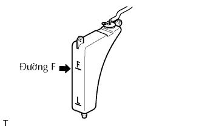 |
Kiểm tra mức nước làm mát trong bình chứa nước làm mát.
Nếu mức nước làm mát sụt xuống dưới vạch F, hãy đổ thêm SLLC của Toyota vào bình chứa đến vạch F.
| 57. KIỂM TRA RÒ RỈ NHIÊN LIỆU |
Nối máy chẩn đoán với giắc DLC3.
Bật khoá điện ON.
Bật công tắc chính của máy chẩn đoán ON.
Hãy chọn thử kích hoạt và truy nhập và menu sau: Powertrain / Engine and ECT / Active Test / Control the Fuel Pump / Speed.
Kiểm tra rò rỉ nhiên liệu.
Kiểm tra rằng không có rò rỉ nhiên liệu trong hệ thống nhiên liệu sau khi tiến hành bảo dưỡng.
| 58. KIỂM TRA RÒ RỈ DẦU |
Khởi động động cơ và kiểm tra rằng không có rò rỉ dầu sau khi tiến hành bảo dưỡng.
| 59. KIỂM TRA RÒ RỈ NƯỚC LÀM MÁT |
Kiểm tra rò rỉ nước làm mát động cơ (Xem trang Kích chuột vào đây).
| 60. LẮP NẮP CHE PHÍA DƯỚI ĐỘNG CƠ NO.1 |
Lắp nắp che phía dưới No.1 bằng 4 bu lông.
Lắp nắp bên phải bằng 2 kẹp và 2 bu lông.
Lắp nắp bên trái bằng 2 kẹp và 2 bu lông.
| 61. KIỂM TRA THỜI ĐIỂM ĐÁNH LỬA |
Hâm nóng động cơ rồi tắt máy.
 |
Khi dùng máy chẩn đoán.
Kiểm tra thời điểm đánh lửa.
Nối máy chẩn đoán với giắc DLC3.
Khởi động động cơ và để nó chạy không tải.
Bật công tắc chính của máy chẩn đoán ON.
Truy cập vào các mục sau đây: Powertrain / Engine and ECT / Data List / IGN Advance.
 |
Khi không dùng máy chẩn đoán.
Kiểm tra thời điểm đánh lửa.
Dùng SST, nối cầu đo của máy đo tốc độ động cơ với cực 9 (TAC) của giắc DLC3.
 |
Kẹp đầu đo của đèn soi thời điểm đánh lửa vào 4 dây dẫn hoặc dây dẫn màu xanh đỏ của giắc nối cuộn đánh lửa xi lanh No.1.
Khởi động động cơ.
| 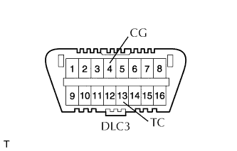 |
Dùng SST, nối tắt các cực 13 (TC) và 4(CG) của giắc DLC3.
| 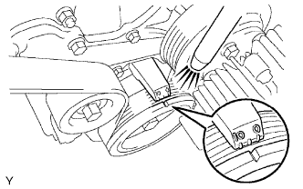 |
Dùng đèn soi thời điểm đánh lửa, đo thời điểm đánh lửa.
Ngắt SST ra khỏi các cực 13 (TC) và 4(CG) của giắc DLC3.
Kiểm tra thời điểm đánh lửa.
Chắc chắn rằng thời điểm đánh lửa dịch sang phía sớm khi tăng tốc độ động cơ.
Tháo đèn soi lửa.
| 62. KIỂM TRA TỐC ĐỘ KHÔNG TẢI |
Hâm nóng động cơ rồi tắt máy.
Khi dùng máy chẩn đoán.
Kiểm tra tốc độ không tải.
|
Nối máy chẩn đoán với giắc DLC3.
Khởi động động cơ và để nó chạy không tải.
Bật công tắc chính của máy chẩn đoán ON.
Truy cập vào các mục sau đây: Powertrain / Engine and ECT / Data list / Engine SPD.
|
Khi không dùng máy chẩn đoán.
Kiểm tra tốc độ không tải.
Dùng SST, nối đầu đo của đồng hồ đo tốc độ động cơ với cực 9 (TAC) của giắc DLC3.
Khởi động động cơ và để nó chạy không tải.
Kiểm tra tốc độ không tải.
| 63. KIỂM TRA CO/HC |
Khởi động và hâm nóng động cơ.
Chạy động cơ tại tốc độ 2500 vòng/phút trong khoảng 180 giây và động cơ chạy không tải.
 |
Cắm đầu đo của máy đo CO/HC vào sâu ít nhất là 40 cm (1.3 ft.) vào đuôi ống xa.
Kiểm tra nồng độ CO/HC tại tốc độ không tải.
Nếu nồng độ CO/HC không như tiêu chuẩn, hãy khắc phục hư hỏng theo thứ tự được trình bày ở bảng dưới đây.
Kiểm tra hoạt động của cảm biến ôxy có sấy (Xem trang Kích chuột vào đây).
Hãy xem bảng dưới đây để tìm nguyên nhân khác, sau đó kiểm tra nguyên nhân và sửa chữa nếu cần.
| CO | HC | Hư hỏng | Các nguyên nhân |
| Bình thường | Cao | Chạy không tải không êm |
|
| Thấp | Cao | Chạy không tải không êm (Chỉ số HC dao động) |
|
| Cao | Cao | Chạy không tải không êm (Khói đen ra khỏi ống xả) |
|
| 64. KIỂM TRA CHỨC NĂNG CỦA CỔ HỌNG GIÓ |
 |
Kiểm tra tiếng kêu hoạt động của môtơ điều khiển bướm ga.
Bật khoá điện ON.
•Khi đạp bàn đạp ga, hãy nghe âm thanh hoạt động của môtơ đang chạy. Chắc chắn rằng không có tiếng kêu do ma sát phát ra từ môtơ.
Nếu nghe thấy tiếng kêu do cọ xát, hãy thanh thế cổ họng gió.
 |
Kiểm tra cảm biến vị trí bướm ga.
Nối máy chẩn đoán với giắc DLC3.
Bật khoá điện ON.
Dưới dữ liệu hiện thời, hãy kiểm tra rằng số phần trăm góc mở bướm ga (Throttle Pos) là nằm trong tiêu chuẩn.
| 65. TIẾN HÀNH THIẾT LẬP BAN ĐẦU |
TIẾN HÀNH THIẾT LẬP BAN ĐẦU (Xem trang Kích chuột vào đây).